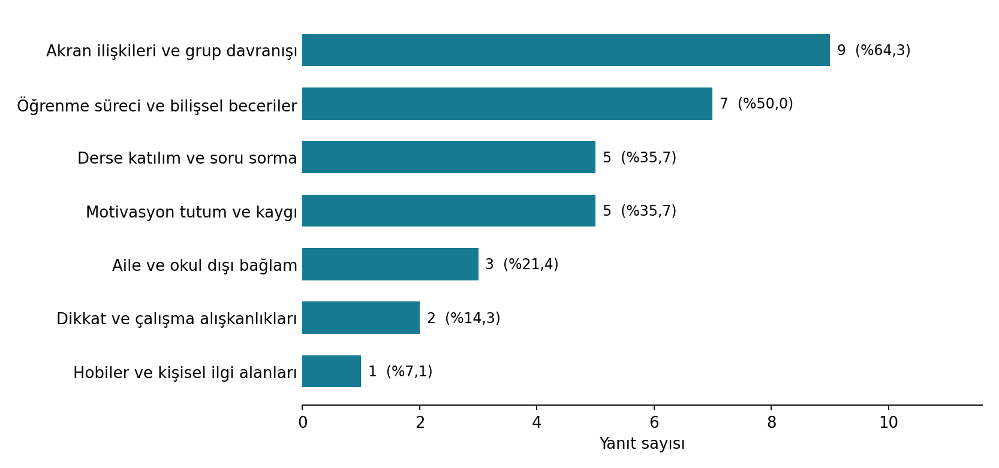
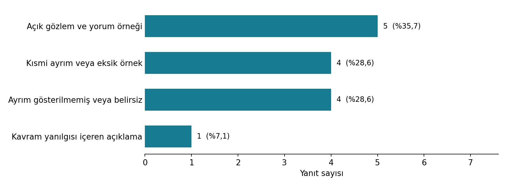
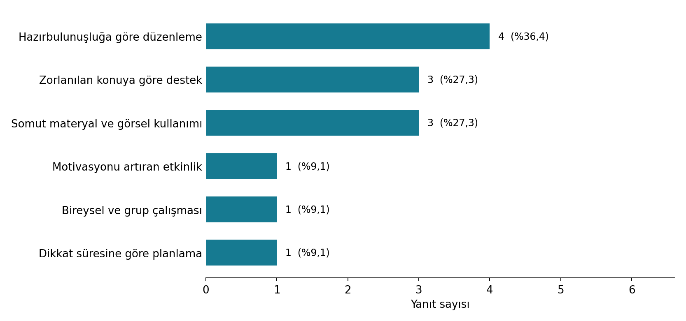

Bireysel farklılıklar
Gelişim, hazırbulunuşluk, ilgi ve sosyoekonomik/kültürel bağlamın öğretime etkisini açıklayabilirsin.
HAFTA 03 · 2 SAAT TEORİ + 6 SAAT OKUL
Öğrenci hakkında varsayım üretmek yerine, gözlenebilir davranışlardan güvenilir ve etik kanıt üretmek.
Gelişim, hazırbulunuşluk, ilgi ve sosyoekonomik/kültürel bağlamın öğretime etkisini açıklayabilirsin.
Yapılandırılmış ve yapılandırılmamış gözlem ile zaman örneklemesini amaca uygun kullanabilirsin.
“Ne gördüm/duydum?” ile “Bunun anlamı ne olabilir?” sorularını ayırarak betimsel gözlem notu yazabilirsin.
Öğrenci bu öğrenme için hangi ön bilgi ve becerilere sahip?
Hangi görevler öğrencinin dikkatini, merakını ve matematiksel katılımını görünür kılıyor?
Dil, kültür, önceki yaşantılar ve öğrenme ortamı öğrencinin sınıftaki davranışını nasıl etkileyebilir?
“Bu öğrenci görsel öğrenendir; yalnızca görsel materyalle öğrenir.” gibi öğrenciyi sabit bir tipe indirgeyen etiketler.
Öğrencinin ön bilgisi, göreve verdiği tepki, kullandığı strateji ve ihtiyaç duyduğu desteği gözlemleyip öğretimi buna göre uyarlamak.
Tartışma: Bir öğretmen öğrenciler arasındaki farklılıkları dikkate alırken hangi kanıtlara dayanmalıdır?
Öğretmen “3/4 mü, 2/3 mü daha büyüktür?” sorusunu soruyor.
Öğrenci A: “3, 2’den büyük; o yüzden 3/4 daha büyük.”
Öğrenci B: Her iki kesri sayı doğrusunda gösteriyor.
Öğrenci C: Ortak payda kullanıyor fakat işlemi yarıda bırakıyor.
Grup görevi: Her öğrenci için yalnızca gözlenebilir kanıtı yazın. Ardından olası hazırbulunuşluk çıkarımını ve öğretmenin sorabileceği bir sonraki soruyu ayrı sütunlarda oluşturun.
Önceden belirlenmiş davranış, kategori veya sorularla sistematik veri toplar.
Sınıfta ortaya çıkan önemli olayları daha açık uçlu biçimde kaydeder; sonradan örüntü aranır.
Belirli zaman aralıklarında hedef davranışın görülüp görülmediğini veya öğrencinin ne yaptığını kaydeder.
| İfade | Tür | Daha güvenilir yazım |
|---|---|---|
| “Öğrenci matematiğe ilgisiz.” | Yorum | 10 dakikalık bireysel çalışmada ilk 6 dakika kalemini kullanmadı; iki kez yanındaki öğrenciyle konuştu. |
| “Öğrenci soruyu okuyup 30 saniye bekledi, sonra şekil çizdi.” | Betimleme | Olduğu gibi korunabilir; gözlenebilir davranış içeriyor. |
| “Öğrenci konuyu anlamadı.” | Yorum | İki örnekte pay ve paydayı topladı; açıklama istendiğinde aynı işlemi tekrar etti. |
Hızlı test: Bir gözlem notunu sınıf arkadaşınızla değiştirin. Arkadaşınız “Bunu gerçekten görebilir/duyabilir miydim?” sorusunu yanıtlasın.
Her grup kendisine verilen ifadeyi tartışır; Gözlem / Yorum kararını verir, gerekçesini yazar ve gerekiyorsa ifadeyi yalnızca gözlenebilir/duyulabilir davranışlarla yeniden düzenler. Her gruptan bir yazıcı yalnızca kendi grubunun satırını doldurur.
🔒 Erişim: İZÜ kurumsal hesabı gerekir. 8 grup · her grup yalnızca kendi satırını düzenler · kişi veya okul adı gibi tanımlayıcı bilgi kullanılmaz.
Üç kısa soruyu yanıtlayarak sınıfın ortak görüş havuzuna katkıda bulun. ÖBS sınıf listesindeki sırana karşılık gelen Katılımcı XX satırını kullan ve yalnızca kendi satırını düzenle.
🔒 Erişim: İZÜ kurumsal hesabıyla giriş gerektirir. Ad-soyad veya öğrenci numarası yazma; başka öğrencilerin yanıtlarını değiştirme veya silme; kişi ya da okul adı gibi tanımlayıcı bilgi paylaşma.
Ders sonrası: Mevcut yanıtların toplu analizi aşağıdaki Sınıf Görüşlerinin Analizi bölümünde yayımlanmıştır.
2 EKİM 2026 · 14 KATILIMCI KODUNUN YANITLARI
53 kişilik sınıfta 14 katılımcı kodunda en az bir yanıt (%26,4), 11 kodda üç soruda da metin bulunmaktadır. Bulgular mevcut yanıtları betimler; sınıfın tamamına genellenemez.
Akran ilişkileri 9/14, öğrenme süreçleri 7/14 yanıtta öne çıktı.
5/14 yanıtta gözlenebilir davranış ve yorum açık bir örnek çiftiyle ayrıldı.
Hazırbulunuşluk, zorlanılan konular ve somut materyaller başlıca planlama alanları oldu.



Öncelikli uygulama: Gözlem–yorum örneklerini sınıflandırma ve gözlemden matematik etkinliğine geçiş üzerine iki kısa atölye yapılması önerilir.
Veri sınırı: Dönüş belgesinde 34 katılımcı satırı bulunuyor; 20'sinde içerikli yanıt yok, şablondaki 19 satır dosyada bulunmuyor. Eksik satırlar devamsızlık veya katılmama kanıtı sayılmadı. Kodlama yapay zekâ destekli ön değerlendirmedir.
| Zaman | Bağlam / görev | Ne gördüm / duydum? | Yorum / olası açıklama | Öğretim için soru |
|---|---|---|---|---|
| … | … | Yalnızca betimsel kayıt | Kanıttan ayrı yaz | Bir sonraki adım? |
| … | … | … | … | … |
Kural: Önce veri, sonra yorum. Tek bir gözlemden öğrenci hakkında kalıcı özellik veya tanı çıkarılmaz.
Ad, numara, fotoğraf, ses, ekran görüntüsü veya öğrenciyi tanımlayabilecek ayrıntı kaydedilmez.
Gözlemcinin varlığının davranışı değiştirebileceğini kabul et; tek gözlemi kesin sonuç gibi yorumlama.
Yalnızca dersin öğrenme amacı için gerekli veriyi kaydet; gereksiz kişisel bilgi toplama.
Uygulama öğretmeniyle birlikte bir öğrenciyi anonim kodla seç. Ders içinde belirli bir gözlem sorusuna odaklan ve en az üç zaman noktasında betimsel kayıt oluştur.
| Gözlem sorusu | Zaman / durum | Betimsel kanıt | Olası yorum | Planlamaya etkisi |
|---|---|---|---|---|
| Örn. Öğrenci problem çözmeye nasıl başlıyor? | 1 | … | … | … |
| 2 | … | … | … | |
| 3 | … | … | … |
Anonim gözlem protokolü + en az üç betimsel kayıt + kanıta dayalı iki öğretim çıkarımı + kısa yansıtma.
Öğrencilerin kişilik yargısı içeren ifadelerini gözlenebilir davranış diline dönüştürün. “Neden?” sorusundan önce “Tam olarak ne gördün veya duydun?” sorusunu kullanın. Matematik vakalarında öğrenci hatasını eksiklik değil, düşünmeyi görünür kılan veri olarak ele alın.
Bu hafta yazdığın bir gözlem notunu seç. Önce yalnızca betimsel kanıtı, sonra bu kanıta dayalı olası yorumunu ve son olarak öğretim planında yapacağın değişikliği yaz. Üçünü birbirinden açıkça ayır.